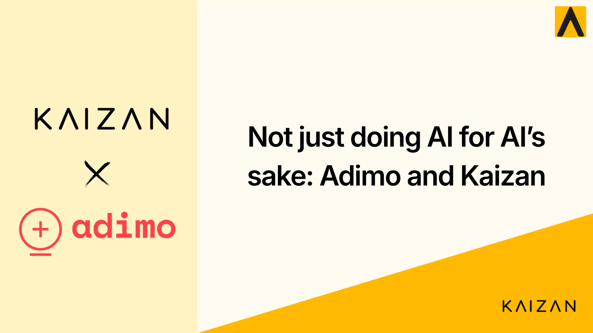

Not just doing AI for AI’s sake: Adimo and Kaizan

It’s been just over 18 months since ChatGPT formally launched, with 1 million users signed up within a few days of launching, and over 100 million users over the next month. We have seen a proliferation of competing products, businesses built with AI tech at their core, and many others who have sought to compliment their product offering with AI enhancements.
At Adimo, we’ve been exploring how we can use AI and machine learning to create efficiencies for several years. Through a knowledge sharing partnership with a local university, we’ve been testing algorithms to automate data-heavy campaign set-up for clients with more complex shopping experience briefs.
Nonetheless, when ChatGPT launched, we experienced that same internal and external pressure to look at ways in which AI could enhance our offerings. There were the more obvious ideas, like building a consumer-facing AI-powered chatbot for our clients — something we have not done to date due to concerns around guardrails and the risk of brand damage from a rogue chatbot! There does continue to be ongoing research into how we can better leverage AI to help us better analyse and understand the vast amounts of e-commerce and retail analytics data we hold.
When Kaizan approached us to talk about the product they were building and the opportunity to become a beta partner of theirs, it was an easy decision to make as their platform solved a real problem that drives positive business outcomes. Kaizan is a platform which enables teams to increase their metrics around client satisfaction, profitability, revenue and their productivity. Their platform plugs into many of the different touch points we have with our clients (including our email, chat, video and CRM platforms), utilising AI to understand the content and sentiment of these different engagements with our clients, and provides our Customer Success team with insights into accounts that are going well and those that may have risk. In today’s world, it can be challenging to keep on top of all of these different channels — Kaizan makes this much easier for us and displays information on all of our accounts in an easy-to-use dashboard. With easy access to overall sentiment scores, plus access to write-ups of meetings, and highlights comments made in any tracked communication that may warrant further investigation it ultimately frees up the team to focus on the more strategic side of their role.
With companies finding seemingly endless ways to introduce (and try to charge for) AI features, our experience has helped make us more focused on not just implementing AI for AI’s sake, but instead ensuring that either the addition of an AI-powered feature genuinely compliments your original value proposition, or helps to drive positive business outcomes.
Learn more about Adimo’s journey with Kaizan here.